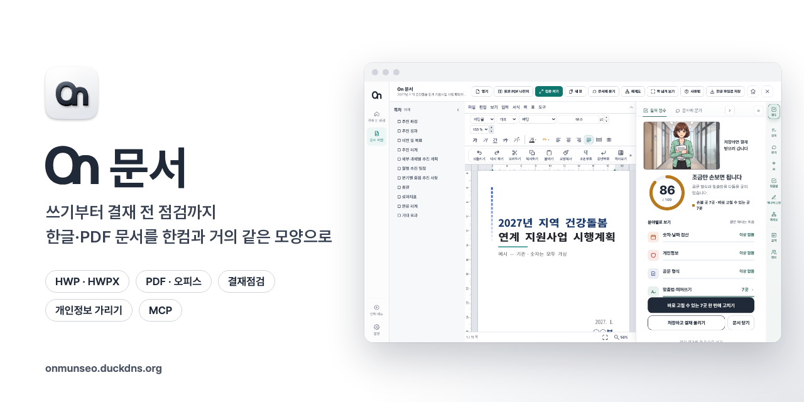
시범판로그인 없이 손님으로문서는 서버에 남기지 않음한글 프로그램 없이점검은 AI 없이한글 문서를 웹에서 쓰고,
결재 전에 점검합니다
한글(HWP·HWPX)·PDF·오피스 문서를 브라우저에서 열어 보고 고치고, 원고나 AI 채팅의 글을 정부 공문서 꼴 한글 보고서·계획서(표지·목차·장 제목·표·그래프·체계도까지)로 만들어 주며, 결재 전에 공문서 형식·숫자·개인정보·보안 표시를 점검하는 웹 서비스입니다. 한글 프로그램이 깔려 있지 않은 PC·맥·휴대폰에서도 쓰고, 점검과 고치기는 AI 없이 됩니다. 공공 분야 현장에서 일하며 만든 문서 도구이고, 지금은 시범판입니다. 로그인 없이 손님으로 바로 써 볼 수 있습니다.
Claude Code 같은 AI 도구가 저장소의 설치 안내를 읽고 알아서 붙입니다. 손으로 하려면 INSTALL.md.
직접 잰 숫자
공공 문서를 한컴 한글이 만든 결과와 맞대어 직접 잰 값입니다. 공식 순위가 아닙니다.
| 29,947개 | 지금까지 시험·분석한 공개 문서 파일 — 공공기관 422곳의 한글·오피스·PDF 문서 19,021개와 그 짝으로 쓴 한컴 PDF 10,077개, 글자 인식 시험 쪽 849개(9만 2천 쪽 이상, 같은 파일은 한 번만 셈). 이와 별도로 비공개 실무 문서 1,972개도 시험(2026-11-22 집계) |
|---|---|
| 1만 9천여 개 | 시험한 공개 공공 문서(짝 PDF 까지 파일 2만 9천여 개, 겹침 뺌). 그 가운데 공개 문서 6,821개·55,180쪽은 열고 저장하고 다시 열어 멈춤 0 · 저장 실패 0 |
| 99.87% | 법령 별표·보도자료 한글 1,726개에서 꺼낸 한글 글자(한컴 PDF 의 1,716,582자 기준) |
| 100개 중 98~99개 | 쪽 수까지 한컴과 같은 문서 — 복잡한 공공 문서 1,453/1,470 · 정책브리핑 보도자료 1,982/1,996 · 법령 별표 3,375/3,432 |
| 30종 모두 100점 | On 문서로 만든 공문서 30종을 한컴오피스 한글 2024 로 열어 채점 — 끝 줄에 1~2글자만 넘어간 문단 0 |
| 0.970 | 영어 PDF 200쪽 공개 벤치마크 공식 채점기 종합(그림 속 글까지 읽는 정밀 읽기) — 공식 순위표 최고 0.907(엔진 14개). 개발 때 보지 않은 125쪽만 따로 재도 0.970 |
| 0.981 | 한글(HWPX) 파일 속 표를 칸 나눔·합친 칸·칸 글까지 원본 그대로 꺼낸 점수(표 구조 TEDS, 1이 만점) — 개발에 쓰지 않은 법령 별표 50개 |
| 0.999 | 한글(HWPX) 파일 속 원본 글과 대조한 글자 정확도 — 같은 법령 별표 50개 |
| 1.000 · 0.989~0.999 | 워드·엑셀·파워포인트 공공데이터 457개 글 재현율 · 표 칸 재현율(워드 0.989 · 엑셀 0.998 · 파워포인트 0.999) |
| 1초에 약 190쪽 | 한글 그리기(복잡한 공공 문서 43,942쪽 평균, 윈도우 i7-14700). 글 꺼내기는 한글 2,150개를 모두 8.2초(맥북 M5 Pro). 서버는 그래픽 카드 없이 CPU 2코어·메모리 2.5GB |
한글 그리기(쪽 수·사라진 글)는 2026-11-22 에 On 한글엔진 2.1.9 로 잰 값입니다. 만들기 30과제는 2.1.9(2026-11-22), 6,821개 열기·저장은 2.1.6, 그리기 속도는 2.1.4(모두 2026-11-19), 한글 글 꺼내기는 2026-11-12 판, 오피스·영어 PDF는 2026-11-22 밤 측정(시범판), 한글 원본 대조는 2026-11-20 에 쟀습니다. 문서 수는 2026-11-12 집계. 남은 약점은 한계에 같은 무게로 적었습니다. 정의·95% 신뢰구간·직접 재 보는 법은 측정 자료에 있습니다. 문서별 결과 목록은 공개하지 않습니다(연구·검증 목적이면 onmunseo.key [at] gmail.com 으로 요청해 주세요). 「한컴과 같다」는 한컴 프로그램이 만든 PDF 와 견준 결과일 뿐, 인증이나 제휴가 아닙니다.
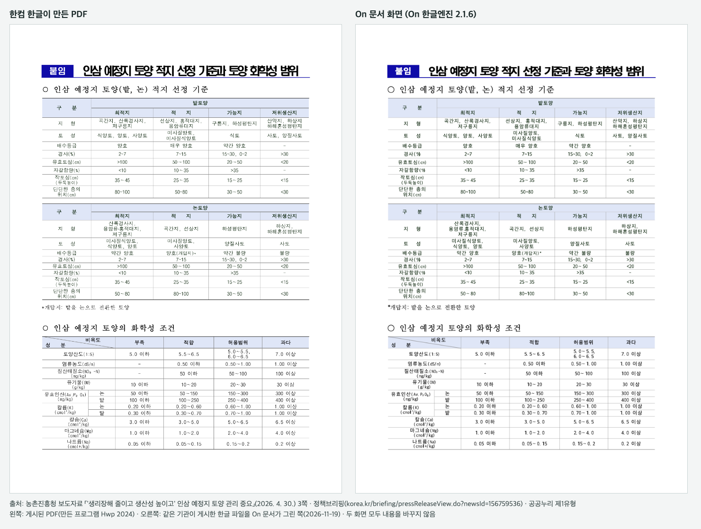
On 문서 설치 전·후, 무엇이 달라지나
같은 원고 5편(가상의 ○○ 자료)으로 한글(HWPX) 공문서를 두 가지 방법으로 만들고, 한컴오피스 한글 2024 로 열어 PDF 로 저장한 결과를 같은 잣대로 쟀습니다. 설치 전은 AI 채팅만으로 AI 가 스스로 코드를 짜서 만든 파일, 설치 후는 On 문서(공문서 쓰기)로 만든 파일입니다. 같은 잣대를 30과제 채점 방식으로 점수로 매기면 설치 전 57.1점, 설치 후 99.9점입니다.
| 한컴 한글 2024 로 연 결과 | On 문서 설치 전 — AI 채팅만 | On 문서 설치 후 |
|---|---|---|
| 열린 문서 | 5/5 | 5/5 |
| 열렸지만 글이 하나도 보이지 않은 문서 | 3/5 | 0/5 |
| 원고 내용이 그대로 보인 요소(제목·문단·표 칸) | 60/169 (35.5%) | 169/169 (100%) |
| 둘째 줄이 첫 줄 글자 자리에서 시작한 □·○·- 문단 | 0/17 | 32/32 |
| 쪽 끝에 제목만 남은 곳 | 0 | 0 |
| 끝 줄에 1~2글자만 넘어간 문단 | 1/17 | 1/32 |
| (참고) 끝 줄이 줄 폭의 1/3 도 안 되는 문단 | 6/17 | 20/32 |
| 쪽 수(보고서·검토 보고·계획서·결과보고서·보도자료) | 1·1·3·1·2 (1쪽 셋은 빈 쪽) | 2·2·4·3·1 |
설치 전의 문단 숫자는 글이 보인 2편만 센 값입니다. 끝 줄이 짧은 문단은 설치 후가 더 많습니다.
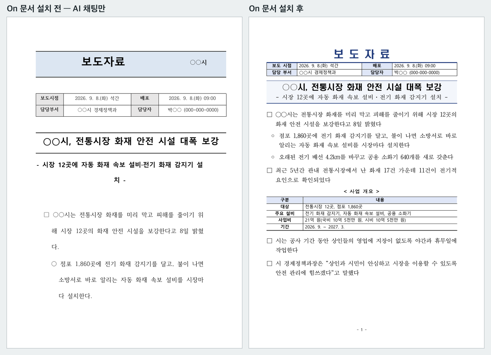
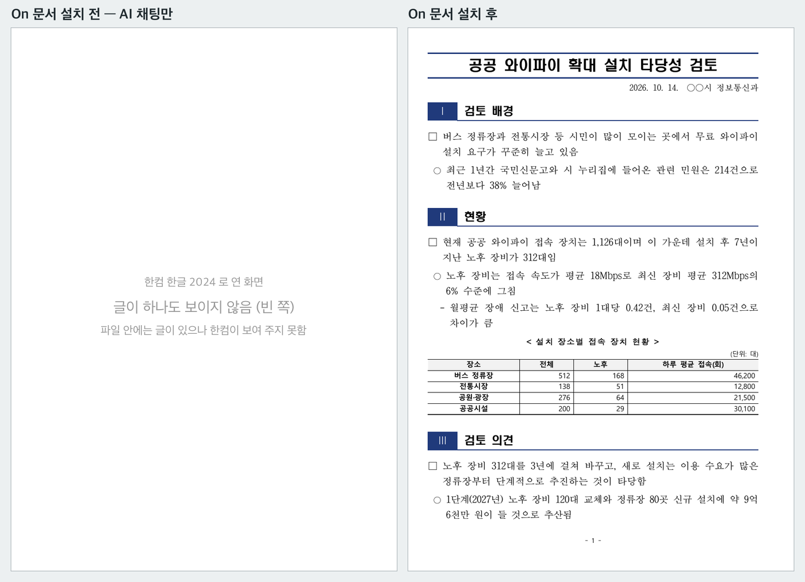
어떻게 쟀나 — 여기서 「설치」는 AI 채팅에 On 문서 MCP 를 연결한 것입니다. ① 두 쪽 모두 같은 원고와 같은 요청 「이 자료로 공문서 꼴 한글(HWPX) 보고서를 만들어 줘」(보고서 자리는 과제 종류)로 만들었습니다. 설치 전은 MCP·플러그인 없이 빈 폴더에서 범용 AI 코딩 도구가 과제마다 한 번 만든 그대로이고(고르거나 다시 시키지 않음), 설치 후는 같은 원고에서 AI 가 뽑아 고정해 둔 짜임으로 On 문서 공문서 쓰기를 부른 결과입니다. ② 두 쪽 파일을 한컴오피스 한글 2024(9.1.1)로 열어 PDF 로 저장하고 그 PDF 를 쟀습니다. 「글이 보이지 않음」은 한컴에서 연 문서의 본문 글자가 0자라는 뜻입니다. ③ 2026-11-22 측정, On 문서 시범판 후보(On 한글엔진 2.1.9). 5편은 작은 표본이고, AI 와 때에 따라 설치 전 결과는 달라질 수 있습니다. 사람이 한컴에서 열어 보고 다시 시키면 나아질 수 있습니다.
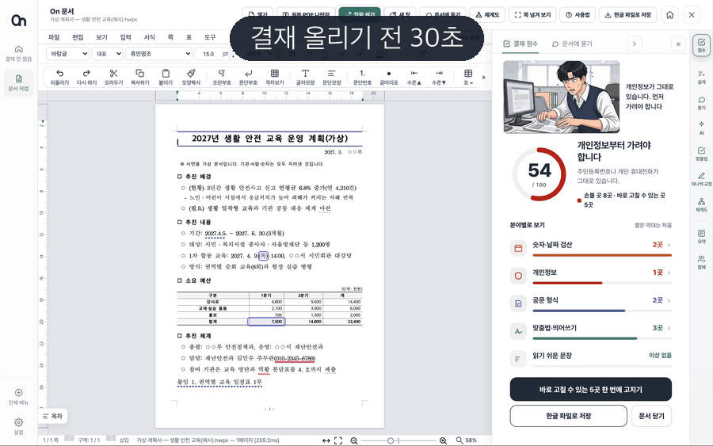
이럴 때 쓰세요
- 맥·한글 없는 PC에서 한글 파일을 고쳐 저장할 때 — 보기만이 아니라 글과 표를 고치고 한글(HWPX) 파일로 저장합니다. 설치 없이 브라우저에서 됩니다.
- 휴대폰에서 받은 hwp를 그 자리에서 고쳐 보낼 때 — 한컴과 같은 쪽 나눔·줄바꿈으로 열어 글을 고치고, 한글(HWPX) 파일로 저장해 보낼 수 있습니다.
- 결재 올리기 전에 — 날짜·요일, 금액·표 합계, 공문 표기, 맞춤법, 개인정보를 규칙으로 찾아 결재 점수로 보여 주고, 답이 정해진 곳은 한 번에 고칩니다.
- 대외비·보안 등급 문서를 AI에 올리기 전에 — 여는 순간 글로 적힌 보안 표시를 찾아 잠그고, 잠긴 동안은 AI·서버로 아무것도 보내지 않습니다. 그림으로만 찍힌 표시는 놓칠 수 있습니다.
- 개인정보가 든 문서를 보내기 전에 — 주민등록번호·전화번호·계좌번호 같은 개인정보를 찾아 문서에서 바로 가립니다. 이 브라우저 안에서 되고 서버로 보내지 않습니다.
- AI 열쇠가 없는데 초안이 필요할 때 — 「도우미에게 맡기기」로 자료를 올리면 서버 도우미가 자료를 규칙으로 정리해 표지·목차가 있는 공문서 초안(한글 파일)을 몇 초 안에 만들어 줍니다. AI 를 쓰지 않아 원문에 없는 말을 지어내지 않고, 자료는 서버 밖으로 나가지 않습니다.
- 고른 문장을 공문서 말투로 바꾸거나 제목이 필요할 때 — 「바꿔 쓰기 도우미」(서버 안에서 도는 KT Mi:dm 2.0 Mini)가 공문서 문장·제목 후보 3개를 제안합니다(요약은 속도를 맞춘 뒤 켤 예정). 원래 글과 나란히 보여 주고, 원문에 없는 숫자는 빨갛게 짚습니다.
- AI 채팅에 자료를 넘길 때 — 「자료 올리기」로 파일을 올리면 15분 동안만 열리는 자료 주소가 나옵니다. 그 주소를 AI 채팅에 주면 AI 가 On 문서로 글과 표를 꺼내 읽습니다.
- AI 채팅은 쓰는데 결과를 한글 양식으로 받기 어려울 때 — 챗GPT·클로드·제미나이 같은 AI 채팅(무료·구독)에 붙여 넣을 글을 만들어 주고, 받은 답을 고른 양식의 한글 문서로 만듭니다. AI 열쇠 없이 됩니다.
- 문서를 서버에 남기지 않는 도구가 필요할 때 — 점검·가리기·체계도는 브라우저 안에서 되고, 서버를 거치는 일(한글로 바꾸기·글 꺼내기·글자 읽기·도우미)도 메모리에서만 다루고 처리 뒤 바로 버립니다.
- PDF를 한글 파일로 옮길 때 — 글과 표를 꺼내 한글 파일로 만듭니다. 본문·제목 글꼴과 크기는 살리지만 쪽 모양이 그대로 옮겨지지는 않습니다.
- 영수증·스캔 문서의 글자를 옮길 때 — 사진이나 스캔 PDF의 글자를 읽어 고칠 수 있는 한글 문서로 엽니다. 손글씨는 틀리기 쉬워 원본과 맞춰 보셔야 합니다.
할 수 있는 일
AI 없이
- 결재 전 점검·한 번에 고치기 — 열자마자 점수와 고칠 곳이 보이고, 날짜 표기·개인 휴대전화·맞춤법 같은 곳은 눌러서 한 번에 고칩니다.
- 숫자 검산 — 합계·요일·날짜가 맞지 않으면 짚어 줍니다. 표는 누르기만 하면 합계를 다시 계산합니다.
- 대외비 잠금 — 대외비 등 보안 표시가 있으면 여는 순간 잠그고, 서버·AI로 아무것도 보내지 않습니다.
- 개인정보 가리기 — 주민등록번호·전화·계좌 등을 찾아 문서에서 바로 가립니다.
- 연관 문서 대조 — 계획서와 예산서처럼 두 문서의 금액·날짜가 어긋난 곳을 찾습니다.
- 체계도·골라 바로 — 항목만 적거나 이미 쓴 글을 고르면 칸 모식도·흐름도·추진체계도가 그려집니다. 상자 글은 원문 낱말을 줄여 쓰고 새 말을 만들지 않습니다. 글을 고르면 형광펜·각주도 바로 답니다.
- 표를 그래프로·차트 고치기 — 표를 고르면 그 숫자로 그래프를 바로 그려 넣습니다. 문서 안 차트는 두 번 눌러 값을 고치면 그림과 한글 파일에 함께 들어갑니다.
- 개조식·쉬운 말·맞춤법 — 서술형 문단을 □ ○ - 개조식으로, 번역투·어려운 한자어를 쉬운 말로 바꾸고, 맞춤법·띄어쓰기를 봅니다.
- AI 채팅으로 쓰고 한글로 받기 — 양식에 맞춰 AI 채팅에 붙여 넣을 글을 만들고, 받은 답을 붙여 넣으면 그 양식의 한글 문서로 만듭니다. 「물론입니다!」 같은 인사말은 지우되 지운 줄은 늘 보여 주고 되살릴 수 있습니다. AI 에는 사용자가 직접 붙여 넣으며, 이 서비스가 AI 로 보내는 것은 없습니다.
- 법률 자동 완성 — 법률 이름과 조만 치면 조문 제목까지 넣어 줍니다. 서버에 담아 둔 법제처 공개 법령 자료로 찾습니다.
- 정식 한글처럼 열기 — 한글(HWP·HWPX)·PDF·워드·PPT·엑셀을 브라우저에서 열고 한글 파일로 저장합니다. 원본 PDF를 옆에 띄워 견줘 볼 수도 있습니다.
- 양식으로 쓰기 — 계획·보고·행사·공고·보도자료 등 예시 양식 66종에서 골라 씁니다.
- 도우미에게 맡기기 — 첨부한 자료를 규칙으로 정리해 표지·목차가 있는 공문서 초안(한글 파일)을 몇 초 안에 만듭니다. 원문 문장을 골라 쓰므로 자료에 없는 말을 지어내지 않습니다.
- 바꿔 쓰기 도우미(열쇠 없이) — 고른 글을 공문서 문장으로 다듬고, 제목 후보 3개를 제안합니다. 결과는 늘 「제안」으로 원래 글과 나란히 보여 주고, 원문에 없는 숫자는 빨갛게 짚습니다. 서버 안의 작은 AI(KT Mi:dm 2.0 Mini)가 하며, 글은 서버 밖으로 나가지 않습니다.
내 AI 열쇠를 연결하면
본인 AI 열쇠(Claude 또는 Gemini)를 연결하면 위 기능에 더해 아래를 씁니다. 열쇠는 이 브라우저에만 두고 우리 서버로 보내지 않습니다. 글은 브라우저에서 고른 AI 회사로 바로 갑니다.
- 쓰기 — 적어 둔 원고를 보고서·계획서·보도자료·기안문 꼴로 정리, 넣은 자료 파일만 근거로 초안 쓰기, 받은 공문 → 회신 기안문.
- 고치기·다듬기 — 말로 요청하면 해당 문단을 고치고 고친 곳마다 되돌리기, 「AI로 더 쉽게」, 핵심 구절만 굵게.
- 점검·예상 질문 — 맞춤법·띄어쓰기 의견을 문단마다 받고 고르기, 결재권자·감사관·민원인이 물을 만한 곳을 근거와 함께 찾기.
- 묻기·요약·풀이 — 문서 안 내용으로만 답하고 근거 문단을 함께 보여 주기, 메신저·메일·보고용 정리, 낱말·표·그림 풀이.
보안 표시(대외비 등)가 있는 문서는 AI 로 보내지 않도록 잠깁니다. 글을 보내기 전에 주민등록번호·전화번호·메일 주소는 가립니다.
기능 모습
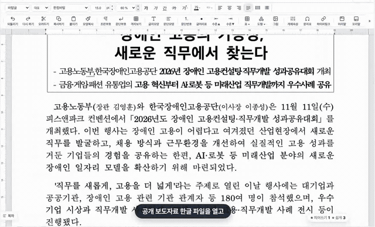
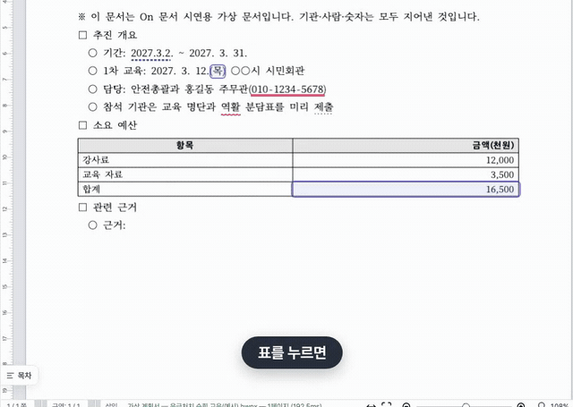
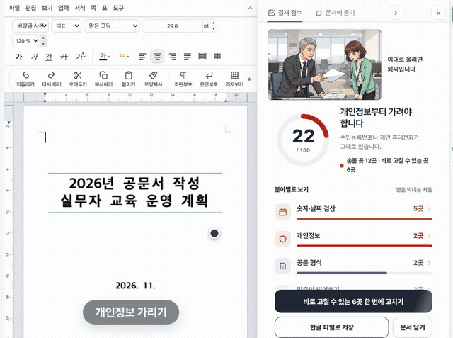
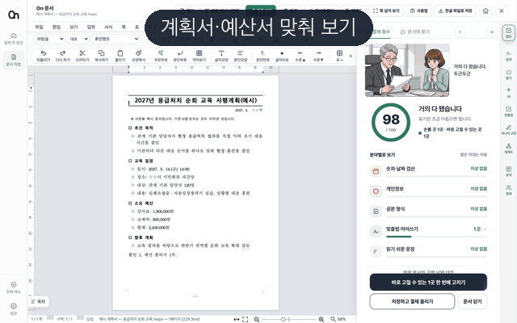
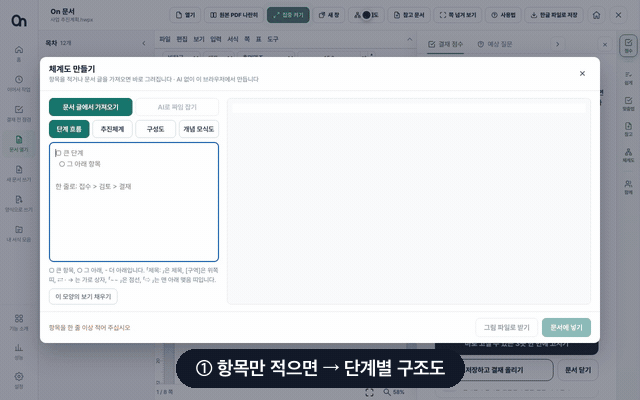
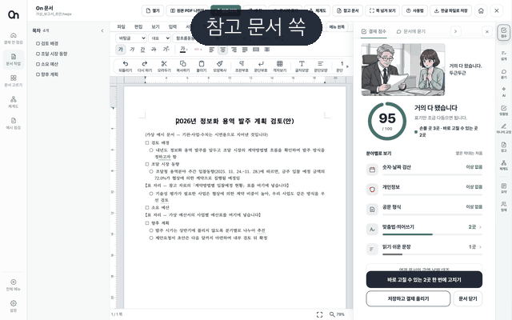
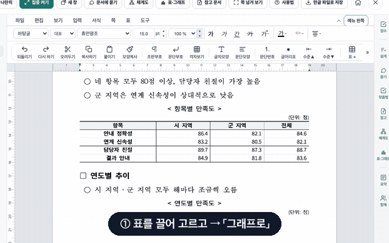
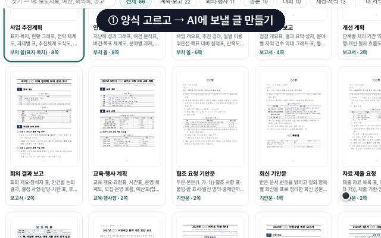
화면 예시의 계획서·예산서·보안 문서는 모두 지어낸 것입니다(기관·사람·숫자는 「○○」 꼴). 「정식 한글처럼 열기」의 보도자료(고용노동부, 2026. 11. 11.)와 「참고 문서 쏙」의 조달청 보도자료(2025. 11. 20.)는 각 기관 누리집에 공개된 것으로, 내용을 바꾸지 않고 보여 줍니다.
누가 어떻게
1처음이면 — 웹 편집기에서 바로
onmunseo.duckdns.org/app/ 을 엽니다. 설치는 필요 없습니다.
- 로그인 없이(손님): 열쇠 없이 바로 씁니다. 한글 열기·고치기·점검·저장은 이 브라우저 안에서 하고 서버로 보내지 않습니다. 손님이 고친 문서와 최근 파일은 창을 닫으면 지워지고, 「이 기기에 기억하기」를 켤 때만 이 기기에 남습니다.
- 손님 하루 몫: 서버를 거치는 일(첨부 글 꺼내기·한글 파일 만들기·AI 도구 연결)은 한 주소에서 하루 50번·1분에 6번, 파일 하나 6MB까지입니다. 바꿔 쓰기 도우미는 하루 20번, 도우미에게 맡기기는 하루 3번입니다. 손님 전체의 하루 몫이 차면 한국 시간 자정까지 닫힙니다.
- 열쇠가 있어야 하는 것: 사진·스캔 글자 인식, 워드·PPT·PDF 를 한글로 바꿔 고치기, 함께 고치기, AI 도구 연결의 나머지 도구 6개(한글로 바꾸기·PDF·쪽 그림·도장·가린 한글 파일), 더 큰 파일과 넉넉한 하루 몫. 열쇠 신청: onmunseo.key@gmail.com(제목에 「On 문서 열쇠 신청」)
- 열쇠·초대 링크로: 받은 초대 링크를 열거나 열쇠를 넣고 들어갑니다.
- 순서를 따라 하고 싶으면 시작하기 쪽을 봐 주세요. 「AI 채팅으로 쓰기」와 「자료 올리기」도 여기서 시작합니다.
2AI 도구에 붙이기(MCP·플러그인)
- 채팅 AI(챗GPT·클로드): 커넥터 설정에 주소 하나
https://onmunseo.duckdns.org/mcp를 붙입니다. 열쇠가 있으면 연결할 때 뜨는 On 문서 로그인 창에 열쇠를 넣습니다. 열쇠 없이 붙이면 손님 도구 21개(글 꺼내기·결재점검·개인정보 찾기·한글 파일 만들기·공문서 쓰기·글 다듬기)만 보입니다. - Claude Code: 한 줄이면 됩니다. 열쇠가 있으면 그다음
/mcp에서 on-document 를 골라 로그인하고, 없으면 그대로 손님 도구로 씁니다.
claude mcp add --transport http -s user on-document https://onmunseo.duckdns.org/mcp도구마다 순서는 INSTALL.md, 묶음 주소·도구 목록·플러그인·Cursor 설정은 MCP 안내에 있습니다.
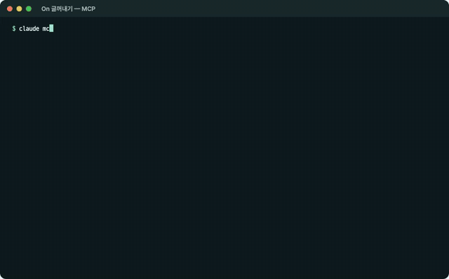
열쇠를 주소 뒤에 붙이지 마세요. 대화 기록과 접속 기록에 남습니다. 메뉴 이름은 각 서비스의 판·요금제에 따라 조금 다를 수 있습니다.
문서는 어떻게 다루나
- 저장하지 않습니다. 서버를 거치는 일(한글로 바꾸기·글 꺼내기·글자 읽기·도우미)은 서버 메모리 안에서만 다루고, 처리가 끝나면 버립니다. 기록에는 글 내용을 남기지 않습니다.
- 「자료 올리기」로 올린 파일과 결과 받기 주소는 15분 뒤 사라집니다.
- 결재 전 점검·개인정보 가리기·체계도는 브라우저 안에서 합니다.
- 보안 등급 표시(대외비 등)가 글로 적힌 문서는 처리하지 않고 돌려보냅니다.
- AI 채팅에 붙여 넣은 글과 AI 가 읽은 자료는 그 AI 회사로 갑니다. 공개 문서와 본인 문서만 넣어 주세요. 기관 내부 문서는 올리지 마세요(이용 조건).
- 참고 자료: 국가정보원 「국가·공공기관 AI보안 가이드북」(2025년 12월)
- 자세한 것은 이용약관과 개인정보 처리방침에 있습니다.
한계
- 사라지는 글이 아직 있습니다. 복잡한 공공 문서 1,470개 가운데 132개(9.0%)는 글 일부가, 2개(0.14%)는 제목 크기 글이 한컴과 달리 보이지 않습니다. 정책브리핑 1,996개에서는 30개·0개, 법령 별표 3,432개에서는 34개·1개입니다. 중요한 문서는 원본과 맞춰 봐 주세요.
- 쪽 수가 다른 문서: 1,470개 가운데 17개, 정책브리핑 1,996개 가운데 14개, 법령 별표 3,432개 가운데 57개는 한컴과 쪽 수가 다릅니다. 한글 2024 로 만든 PDF 와는 같은 줄 비율이 전체보다 낮습니다(95.97%·97.67%).
- 보안 표시: 글로 적힌 표시(대외비·비밀 등급 등)만 찾습니다. 그림으로만 찍힌 표시는 놓칠 수 있습니다.
- 사진·스캔 문서: 큰 AI 모델·GPU 없이 서버 CPU 로 읽어 큰 AI 모델보다 낮습니다. 처음 보는 스캔 표 칸 시험 통과 86.3%, 한국어 글자 인식 공개 시험 종합 0.873 입니다. 손글씨는 특히 틀리기 쉽습니다.
- 개인정보 중 사람 이름: 규칙으로 찾아 놓칠 수 있습니다(공개 시험 473건에서 이름 찾음률 58.4%). 가린 결과를 한 번 더 확인해 주세요.
- PDF·오피스 → 한글 바꾸기: 글과 표를 옮깁니다. 그림과 글꼴 모양은 일부만 옮기고, 쪽 모양은 그대로 옮기지 않습니다.
- 영어 PDF: 위 0.970 은 그림 속 글까지 읽는 정밀 읽기 값이고, 문서당 0.38초 걸립니다(아이맥 M1). 시범판 기본값은 빠른 읽기(종합 0.945, 문서당 0.03초)입니다.
- 서버 도우미: 「도우미에게 맡기기」는 원문 문장을 골라 정리하므로 큰 AI 채팅보다 덜 매끄럽고, 긴 글에서는 핵심이 조금 빠질 수 있습니다. 「바꿔 쓰기 도우미」(Mi:dm)는 작은 모델이라 제안을 늘 확인해야 하고, 한 번에 6~10초 걸립니다.
- 접속: 인터넷으로만 씁니다. 업무망(폐쇄망)에서는 쓸 수 없고, 기관 보안 장비가 이 주소(duckdns.org)를 막는 곳도 있습니다.
- 시범판: 열쇠마다, 손님마다 하루 몫과 동시에 처리하는 수가 정해져 있습니다. 손님이 몰려 자리가 차면 몇 초 기다리거나 「잠시 뒤 다시」 안내가 나옵니다.
- 점검 결과는 참고용입니다. AI 가 쓴 글과 점검 결과는 결재 전에 사람이 확인해 주세요.
이용 조건
- 시범판과 MCP 는 무료 시범 서비스입니다. 기능·하루 몫·주소는 바뀌거나 멈출 수 있습니다.
- 프로그램으로 대량 호출하거나 결과를 자동으로 모아 가지 마세요.
- On 문서가 만든 결과물과 응답을 AI 모델 학습 자료로 쓰지 마세요.
- 사이트에서 내려받는 엔진·프로그램 파일을 떼어 따로 쓰거나 다시 배포하지 마세요.
- 공개 문서와 본인 문서만 넣어 주세요. 기관 내부 문서는 올리지 마세요.
- 글과 그림은 CC BY 4.0, 설정 파일은 MIT 입니다. 「On 문서」 이름과 로고는 이 허락에 들어가지 않습니다. 그 밖은 이용약관을 따릅니다.
자주 묻는 것
한글 프로그램이 없어도 되나요?
됩니다. 브라우저에서 열고 고쳐 한글(HWPX) 파일로 저장합니다. 윈도우·맥·휴대폰·태블릿에서 씁니다.
문서가 서버에 남나요?
남기지 않습니다. 서버를 거치는 일은 메모리 안에서만 다루고 처리 뒤 버립니다. 올린 자료와 받기 주소는 15분 뒤 사라집니다.
AI 열쇠나 유료 구독이 꼭 있어야 하나요?
아닙니다. 점검·고치기는 AI 없이 되고, 「AI 채팅으로 쓰기」는 쓰던 무료 AI 채팅으로 됩니다. 열쇠가 없으면 「도우미에게 맡기기」로 서버 도우미가 초안을 만듭니다.
업무망(폐쇄망)에서 쓸 수 있나요?
지금은 안 됩니다. 인터넷에 연결된 PC 에서 씁니다.
대외비 문서를 넣어도 되나요?
넣지 마세요. 보안 등급 표시가 글로 적힌 문서는 처리하지 않습니다. 기관 내부 문서도 올리지 마세요.
열쇠는 어떻게 받나요?
열쇠 신청: onmunseo.key@gmail.com(제목에 「On 문서 열쇠 신청」). 쓰려는 곳과 필요한 기능을 적어 주세요. 열쇠마다 하루 몫이 정해져 있고, 질문은 깃허브 이슈로 받습니다.
소스 코드가 공개되어 있나요?
아닙니다. 이 저장소에는 소개 글·그림·연결 설정만 있습니다. 엔진·서버 코드는 공개하지 않습니다.
오류는 어디에 알리나요?
깃허브 이슈에 남겨 주세요. 이슈는 누구나 보니 문서 파일이나 개인정보는 올리지 마세요.